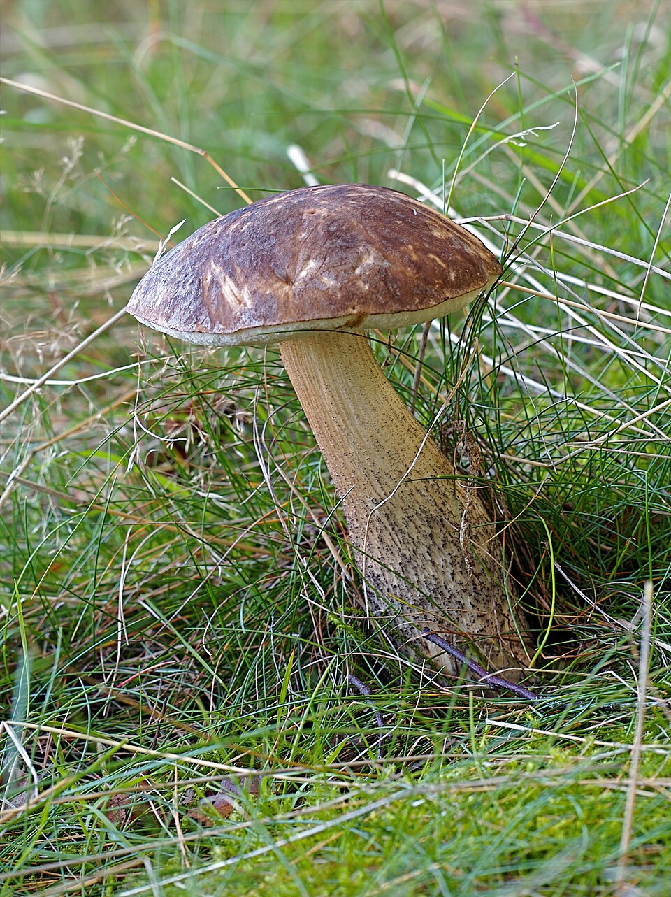
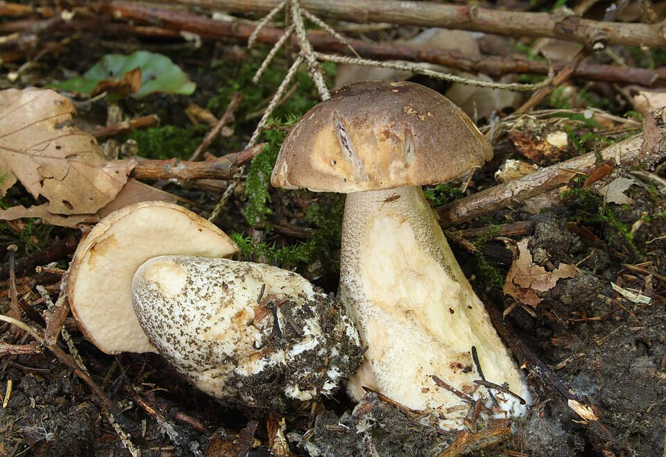
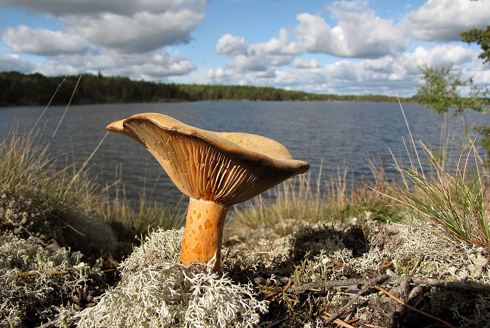
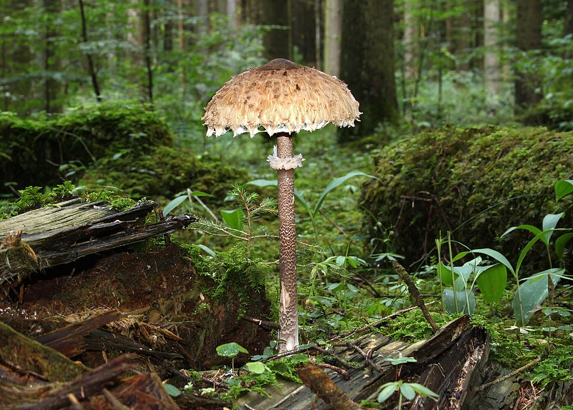
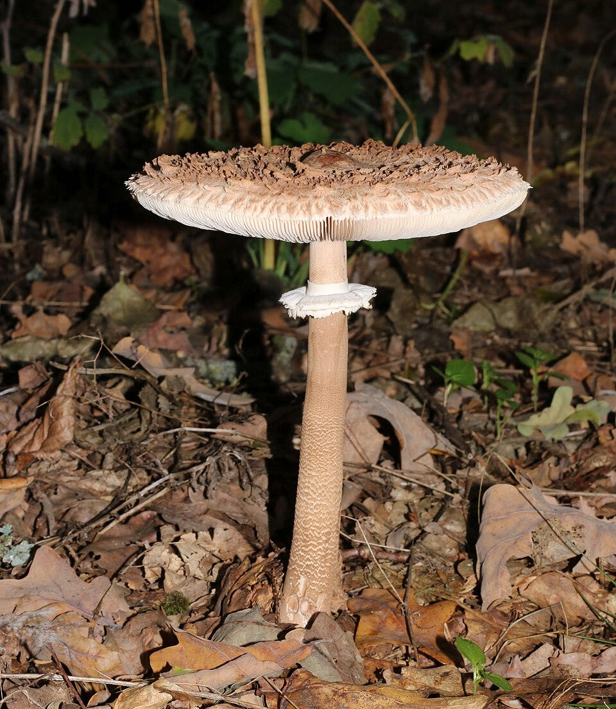
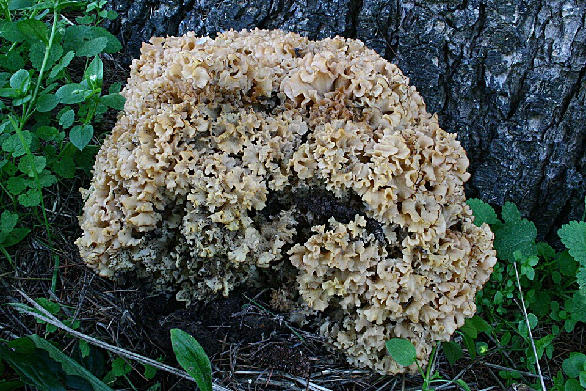
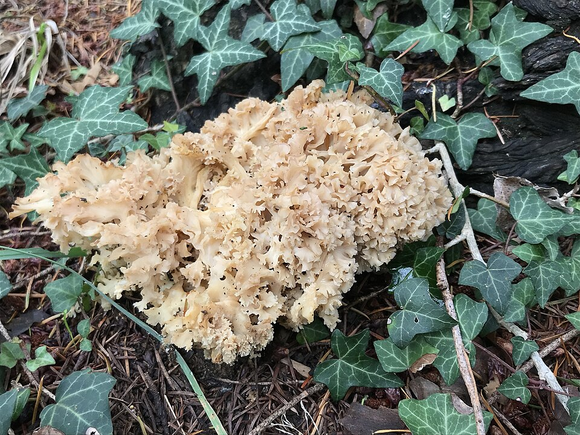
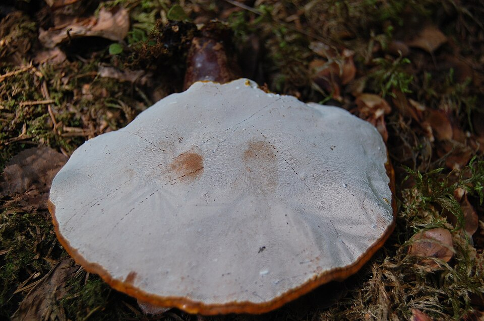
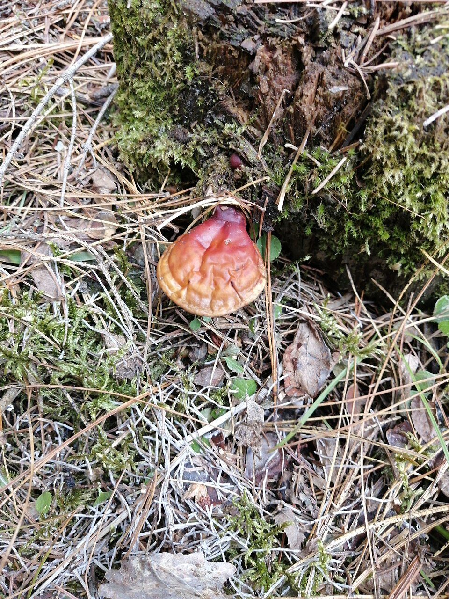

Jadalne
Jadalne


Borowik szlachetny
Boletus edulis
Król polskich grzybów — orzechowy aromat, siateczkowy trzon. Lasy iglaste i mieszane.
 Jadalne
Jadalne


Kurka (Pieprznik jadalny)
Cantharellus cibarius
Złoty kolor, owocowy zapach morelowy — fałdowiec, nie blaszkowy. Tradycja PL, CZ, SK.
 Jadalne
Jadalne


Podgrzybek brunatny
Imleria badia
Najpospolitszy rurkowiec w borach — sinieje po przekrojeniu (to normalne!). Sezon letni-jesienny.
 Obierz skórkę!
Obierz skórkę!


Maślak zwyczajny
Suillus luteus
Pod sosnami — śluzowaty kapelusz. Zawsze obieraj skórkę przed gotowaniem! Doskonały do marynaty.
 Jadalne
Jadalne


Koźlarz babka
Leccinum scabrum
Pod brzozami — łuskowaty ciemny trzon, miąższ ciemnieje po cięciu (norma). Masowy grzyb jesienny.
 Gotuj 20 min!
Gotuj 20 min!


Opieńka miodowa
Armillaria mellea
Kępy na pniakach — surowa toksyczna! Gotuj min. 20 min przed spożyciem. Idealna do marynaty.
 Jadalne
Jadalne


Rydz
Lactarius deliciosus
Pomarańczowe mleczko, zieleniej po cięciu — to normalne. Skarb Słowacji i Czech, smażony na maśle.
 Nie surowa!
Nie surowa!


Czubajka kania
Macrolepiota procera
Olbrzymi kapelusz do 30 cm, ruchomy pierścień, wężowaty trzon. Tylko smażona lub pieczona!
 Gotuj 15 min!
Gotuj 15 min!


Smardz jadalny
Morchella esculenta
Pierwszy grzyb wiosny (III–V) — siateczkowaty kapelusz, pusty w środku. Surowy silnie toksyczny!
 Różowe blaszki!
Różowe blaszki!


Pieczarka łąkowa
Agaricus campestris
Różowe blaszki = bezpieczna. Białe blaszki = śmiertelne niebezpieczeństwo. Sprawdzaj ZAWSZE!
 Jadalne
Jadalne


Boczniak ostrygowaty
Pleurotus ostreatus
Całoroczny na pniach drzew liściastych — brak groźnych sobowtórów, idealny dla początkujących.
 ☠ ŚMIERTELNY
☠ ŚMIERTELNY


Muchomor sromotnikowy
Amanita phalloides
☠ Odpowiada za 90% zgonów po grzybach. Naucz się rozpoznawać go, by bezwzględnie OMIJAĆ!
 Tylko młode!
Tylko młode!


Żółciak siarkowy
Laetiporus sulphureus
Jaskrawopomarańczowa huba na drzewach — „las-kurczak". Jadalna gdy młoda i miękka, brak sobowtórów.
 Jadalne
Jadalne


Szmaciak gałęzisty
Sparassis crispa
Grzyb jak kalafior lub koronka u podstawy sosen — znakomity smak, brak sobowtórów.
 Leczniczy
Leczniczy


Lakownica lśniąca (Reishi)
Ganoderma lucidum
Lakierowana huba wieloletnia — słynny grzyb leczniczy. Herbata, nalewka, suplementy.